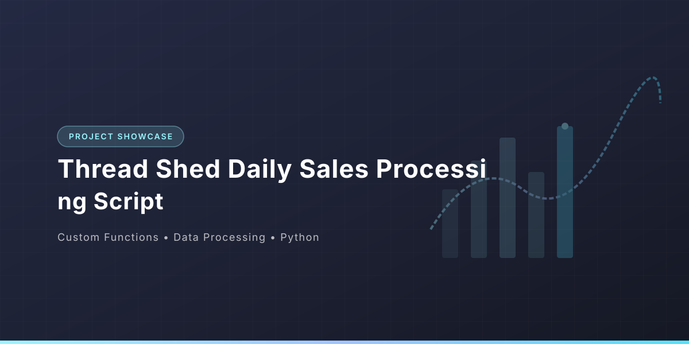

Thread Shed Daily Sales Processing Script
Overview 📈🔬:
Thread Shed Daily Sales Processing Script Parses and cleans raw transaction data from an outdated register system, extracting customer names, sale totals, and thread items into structured lists.

Key Features & Objectives:
- Data Cleansing Pipeline: Strips non-standard delimiters, whitespace, and formatting anomalies.
- Field Extraction & Type Casting: Converts unstructured transaction records into normalized numeric and categorical arrays.
- Automated Aggregation: Calculates daily gross revenue and itemized category breakdown.
- Modular Functions: Encapsulates metric reporting into reusable, scalable sub-routines.
Tools & Technologies Used:
- Custom Functions
- Data Processing
- Python
System Overview & Architecture
Thread Shed Daily Sales Processing Script Parses and cleans raw transaction data from an outdated register system, extracting customer names, sale totals, and thread items into structured lists.
Core Data Processing & Algorithm Implementation
The script implements automated data extraction, string cleansing, price normalization, and sales aggregation routines:
"""
Thread Shed Daily Sales Processing Script
Parses and cleans raw transaction data from an outdated register system,
extracting customer names, sale totals, and thread items into structured lists.
"""
daily_sales = \
"""Edith Mcbride ;,;$1.21 ;,; white ;,;
09/15/17 ,Herbert Tran ;,; $7.29;,;
white&blue;,; 09/15/17 ,Paul Clarke ;,;$12.52
... [Raw transactions dataset truncated for display] ...
"""
#------------------------------------------------
# Start coding below!
# replacing ;,; with another character
daily_sales_replaced = daily_sales.replace(";,;","^")
# splitting each transction into its own list
daily_transactions = daily_sales_replaced.split(",")
daily_transactions_split = []
for transaction in daily_transactions:
daily_transactions_split.append(transaction.split("^"))
# cleaning and removing whitespaces in daily_transactions_split
transactions_clean = []
for transaction_set in daily_transactions_split:
cleaned_set = []
for details in transaction_set:
cleaned_set.append(details.replace("\n","").strip(" "))
transactions_clean.append(cleaned_set)
# create 3 new list and collect individual data from cleaned data
customers = []
sales = []
thread_sold = []
# iterating through the cleaned data and appending to respective list
for cleaned_transaction in transactions_clean:
customers.append(cleaned_transaction[0])
sales.append(cleaned_transaction[1])
thread_sold.append(cleaned_transaction[2])
# calculating total sales for the day
# transforming each entry in sales list to float datatype
total_sale = 0
for sale in sales:
total_sale += float(sale.strip("$"))
total_sales = round(total_sale,2)
print('Total Sales for today: ${}'.format(total_sales))
# calculating quantity of thread sold
# splitting the thread_sold list
thread_sold_split = []
for item in thread_sold:
if not "&" in item:
thread_sold_split.append(item)
else:
for inner in item.split("&"):
thread_sold_split.append(inner)
# function to count thread by color
def color_count(color):
counter = 0
for thread in thread_sold_split:
if color == thread:
counter += 1
return f'Total Number of {color} thread sold: {counter}'
colors = []
for color in thread_sold_split:
if not color in colors:
colors.append(color)
# calling the function for thread color
for color in colors:
print(color_count(color))
Business Impact:
Transforms messy, legacy register logs into clean business intelligence, accurately reporting total daily sales revenue and itemized product performance.
Conclusion 📌:
The pipeline establishes an automated, reproducible workflow for transaction auditing, inventory monitoring, and operational reporting.